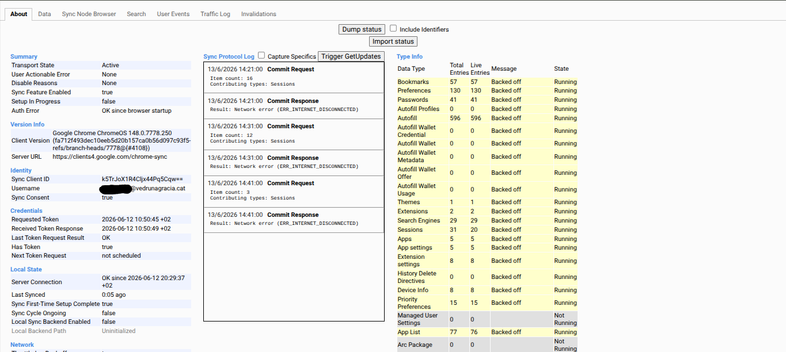
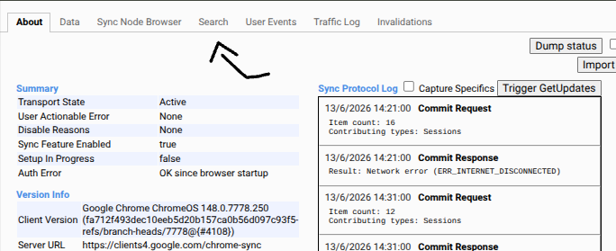
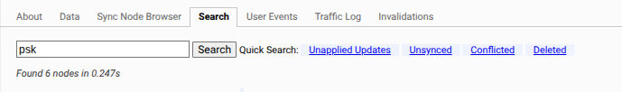
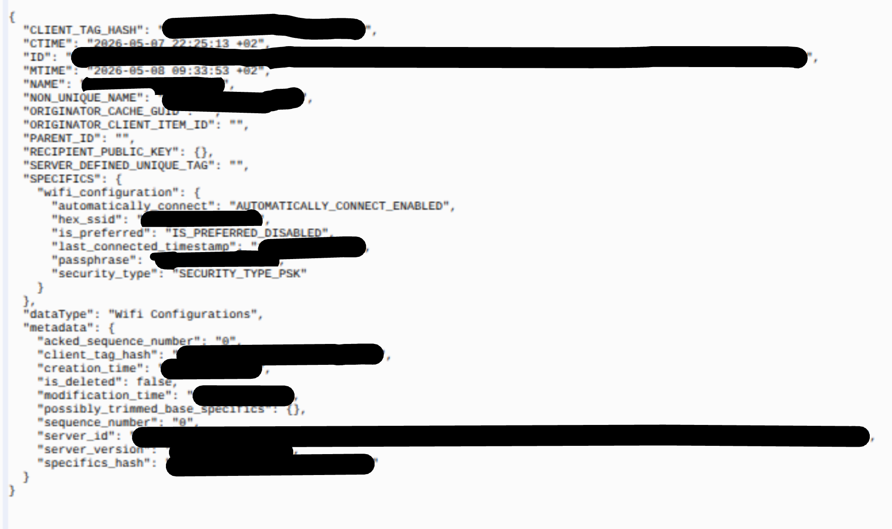

Written in: 04/19/2026 Last edited: 07/08/2026
This is still in underconstruction!
When I found out that the Chromebooks had some secrets that my school forgot to disable, I decided to investigate a little bit. Those idiots forgot to disable chrome://sync-internals that I was able to use this new vulnerability that I found to get the school's wifi password and strike.
Here's a small step-by-step on how you can find that:
1. Go to the search bar and type in chrome://sync-internals and hit enter.
You should see this screen:

2. Hit search:

3. On the search bar, search for the words "wifi" or "psk".

4. (this might take a while, but for me it only took 2 attempts) Select the right one. Decrypt "hex_ssid" and "passphrase" with any Base64 decoder and voila you have the password and the SSID.

Now that you have the password, you can add it on your phone or any other device. Remember that if your school has blocked VPN's, you might want to attempt and have one beforehand. For those who don't want to pay for a VPN, use Psiphon, Proton VPN or something that's free. You could also use a paid one but you won't really want to pay for a thing you only use for this one reason. Depending on the VPN you are using, log in before connecting to the school network because schools are being smarter every single day. If you can download a VPN on your computer or laptop, that's better. It will be faster than a hotspot+VPN+noideahowfaryouarefromyourphone.
Possibly, the schools teacher wifi password. I only found the students one and still trying to elevate access to the "open web". There were like 2 students who had it. Anyway, they had the password to the teacher's wifi and kinda reversed engineered one of them them into giving it but then got banned from using the teachers wifi. I also should state that all of their wifi passwords are very insecure. I also found out that, atleast on my case, they hid the online configurator behind an unskippable warning. You can't access it even with a VPN. Well, depending on what VPN you are trying to use.
Go back to the index, go to episode 0 or go to the next episode. (not released yet)